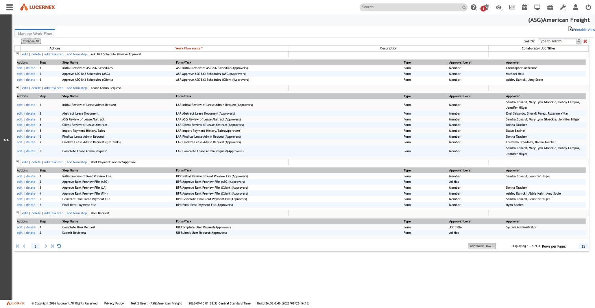
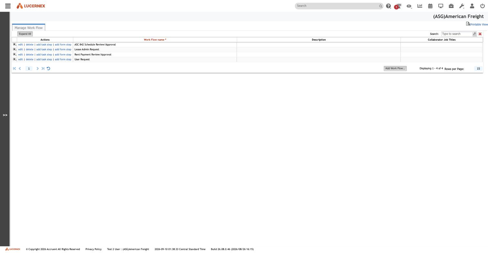

Atlas › Features › Approvals & Workflows
Approvals & Workflows
The approval machinery. Four workflows are live in this tenant, one per form type: Lease Admin Request (8 steps), Rent Payment Review/Approval (6), ASC 842 Schedule Review/Approval (3), and User Request (2). The request is the record; the workflow is its process; they share a name.
Open this feature in the map →
Who it is for
DerivedEveryone who submits a request and everyone who approves one. Routing is by position — a member, a job title, or ad hoc — not by named person.
Source: docs/features/README.md
Where it is used
ObservedA different page layout per workflow step, so the same request presents a different screen to the submitter and to each approver.
Source: docs/data-model/screen-routing.md
BRD-24, already live
ObservedLease Admin Request is BRD-24, already implemented: Initial Review, Abstract Lease Document, ASG Review, Client Review, Import Payment History/Sales, Finalize, Finalize (Defaults), Complete. The BRD describes what the process should be; this shows what it actually is.
Source: docs/modules/workflow/README.md
Per-step layouts
ObservedEach step shows a different screen: a workflow step binds its own page layout, so the same request presents a different field surface at Submit, at Review and at Approve. That per-step binding is what makes the engine expressive enough to run a real business process.
Source: Live capture, Manage Work Flows
Position-based routing
ObservedRouting is by position, not by person: approval level is a member, a job title, or ad hoc - and the API's assignee enum goes further (all, parent, region 1, region 2, market, job title). Notifications walk the org chart to three explicit levels, and routing resolves through the geographic region hierarchy, not the supervisor chain.
Source: docs/modules/workflow/
Four kick-off triggers
ObservedA workflow can start four ways: from a step action, from a page layout, on a status change, or from a task. This is the trigger taxonomy any rebuilt rule engine has to reproduce.
Source: docs/modules/workflow/
Nested state machines
DerivedThe module documents three nested state machines: template lifecycle, instance lifecycle, and per-step transitions, split cleanly into template versus instance.
Source: docs/modules/workflow/README.md
No Task steps exist
ObservedNo task step exists anywhere in this tenant: all 19 configured steps are form steps, though 'add task step' exists in the product. The step record has 55 fields and the admin grid surfaces six - most of the step model is still unseen.
Status home unknown
ObservedWhere workflow status lives is unresolved: 'Work Flow Status Code' is absent from the catalogue of 207 firm-wide value lists. The nearest that exist are approval, last-action and decision status codes.
Workflows Forms
ObservedWhat the workflows forms manual settles: Corrects the 1:1 Form↔Workflow claim — true in AF, false in BBW (4 of 13 match). Versioning is by name suffix. Two JavaScript escape hatches. Biggest open question: Which Lease Admin Request variant is live.
Source: docs/features/workflows-forms/README.md
Manual contents
ObservedThe workflows forms manual is organised as: The 13 BBW workflow templates; Workflows are tenant-authored — they do not fork from a published set; Versioning by name suffix; What the second tenant does not change; Two mechanisms only BBW shows; Routing — a correction carried forward; What this means for ASG Edge+. Read it rather than this node when you need the detail — this is the index.
Source: docs/features/workflows-forms/README.md
Evidence
ObservedWritten up in features/workflows-forms/README.md. 4 screen captures on disk, under docs/assets/screenshots/workflow, docs/assets/screenshots/forms — the screens themselves, not a description of them. First few: manage-workflow-expanded-all-steps.jpg, manage-workflow-index.jpg, manage-forms-expanded-all-layouts.jpg, manage-forms-index.jpg.
Source: features/workflows-forms/README.md
{kind=link}

manage-workflow-expanded-all-steps.jpg{kind=link}

manage-workflow-index.jpg manage-forms-expanded-all-layouts.jpg
manage-forms-expanded-all-layouts.jpg manage-forms-index.jpg
manage-forms-index.jpgOpen questions (67)
Inferred67 things nobody has confirmed for this feature. Each one is work somebody has to do before the feature can be rebuilt with confidence; they are carried here rather than resolved by guessing. Click one for the question and the document that raised it.
Everything in rules md
InferredEverything in rules.md — in particular OQ-43 (open the action editor), OQ-7 (the status code values), OQ-44 (is the linearity real) and OQ-19 (amount-banded routing). OQ-43 is now the single highest-value screen: WorkFlowTemplateStepAction has never been rendered, and it holds the entire control-flow model. Nobody has confirmed this. Recorded in modules/workflow/asg-edgeplus-mapping.md, under the Workflow & Approvals area. Until it is settled, anything built on the assumption is a guess.
Source: docs/modules/workflow/asg-edgeplus-mapping.md
Does the ASC 842
InferredDoes the ASC 842 review gate exist in the accounting module's spec? The live workflow proves schedules are reviewed and double-approved before publication. If ../accounting/ and its BRD assume auto-publish, that is a requirements gap to raise now. Nobody has confirmed this. Recorded in modules/workflow/asg-edgeplus-mapping.md, under the Workflow & Approvals area. Until it is settled, anything built on the assumption is a guess.
Source: docs/modules/workflow/asg-edgeplus-mapping.md
Does the payments spec
InferredDoes the payments spec treat file generation as a workflow step? `Rent Payment Review/Approval` step 5 is *Generate Final Rent Payment File* — a step, not a side effect of approval. Check ../contracts/payment-lifecycle.md against it. Nobody has confirmed this. Recorded in modules/workflow/asg-edgeplus-mapping.md, under the Workflow & Approvals area. Until it is settled, anything built on the assumption is a guess.
Source: docs/modules/workflow/asg-edgeplus-mapping.md
Is BRD 17 Workflows
InferredIs BRD 17 ("Workflows & Approvals Module") consistent with what this analysis found? It is Submitted and ASG-approved (Observed, feature list line 307) but was not available offline for this pass. Read it against rules.md and record every contradiction — per the estate's source-of-truth order, an approved BRD outranks this document. Nobody has confirmed this. Recorded in modules/workflow/asg-edgeplus-mapping.md, under the Workflow & Approvals area. Until it is settled, anything built on the assumption is a guess.
Source: docs/modules/workflow/asg-edgeplus-mapping.md
Does BRD 15 Modern
InferredDoes BRD 15 ("Modern Document Workflow") overlap? Also Submitted (Observed, line 304). Two BRDs with "workflow" in the title need reconciling before either is specced. Nobody has confirmed this. Recorded in modules/workflow/asg-edgeplus-mapping.md, under the Workflow & Approvals area. Until it is settled, anything built on the assumption is a guess.
Source: docs/modules/workflow/asg-edgeplus-mapping.md
What does the existing
Inferred**What does the existing feature/909-page-layouts-backend-poc branch in the monorepo assume about workflow?** It is stranded and must be ported or abandoned before the monorepo is dismantled; if it made workflow assumptions they should be captured now. Nobody has confirmed this. Recorded in modules/workflow/asg-edgeplus-mapping.md, under the Workflow & Approvals area. Until it is settled, anything built on the assumption is a guess.
Source: docs/modules/workflow/asg-edgeplus-mapping.md
Which ADR 004 governs
InferredWhich ADR-004 governs? The KnowledgeFolder database-per-tenant one or the Configuration-Service shared-database one. Workflow instance placement (§5) depends on it. Nobody has confirmed this. Recorded in modules/workflow/asg-edgeplus-mapping.md, under the Workflow & Approvals area. Until it is settled, anything built on the assumption is a guess.
Source: docs/modules/workflow/asg-edgeplus-mapping.md
OQ 1 Are
InferredOQ-1 — Are TriggerCodeSQLTableID / TriggerObjectID real stored columns? They are the only edge from a running workflow to the business record it governs, yet they are absent from the physical extract. In Manage Work Flows open any template, then find a *running* workflow on a Contract's Work Flow tab and check whether the list shows the source record. If the pair is not stored, attachment must be reconstructed via KickOffIssueID → Issue.ProjectEntityID and the model changes materially. Nobody has confirmed this. Recorded in modules/workflow/data-model.md, under the Workflow & Approvals area. Until it is settled, anything built on the assumption is a guess.
Source: docs/modules/workflow/data-model.md
OQ 2 Does
InferredOQ-2 — Does WorkFlowTemplateStepMember exist as a real table? It is the only place Org Chart Level routing can live. In Manage Work Flows → any step → the Approver/Assignee picker, check whether *Org Chart Level* is offered as a selectable Approver Type and, if so, what value it takes (an integer depth? a relative "my supervisor"?). Nobody has confirmed this. Recorded in modules/workflow/data-model.md, under the Workflow & Approvals area. Until it is settled, anything built on the assumption is a guess.
Source: docs/modules/workflow/data-model.md
OQ 3 Where is
InferredOQ-3 — Where is LimitByEntity's portfolio list stored? No join table exists in the schema. In Manage Work Flows tick *Limit By Entity* on a template and observe what control appears and what it is bound to. Nobody has confirmed this. Recorded in modules/workflow/data-model.md, under the Workflow & Approvals area. Until it is settled, anything built on the assumption is a guess.
Source: docs/modules/workflow/data-model.md
OQ 5 Can a spawned
InferredOQ-5 — Can a spawned workflow be traced to its parent? With an action configured to KickOffWorkFlowTemplateID, fire it and inspect the new WorkFlow record for any parent pointer. If none exists, the audit chain is broken by design and ASG Edge+ must add one. Nobody has confirmed this. Recorded in modules/workflow/data-model.md, under the Workflow & Approvals area. Until it is settled, anything built on the assumption is a guess.
Source: docs/modules/workflow/data-model.md
OQ 4 What is
InferredOQ-4 — What is StepMemberResponsibility? A fifth routing dimension or a display label? Check whether Manage Work Flows offers a *Responsibility* field on a step's member configuration, and whether its values come from a code list or free text. Nobody has confirmed this. Recorded in modules/workflow/data-model.md, under the Workflow & Approvals area. Until it is settled, anything built on the assumption is a guess.
Source: docs/modules/workflow/data-model.md
OQ 6 What does
InferredOQ-6 — What does IsNotifyClosed actually mean? The column name says "notification closed"; the vendor definition says "has notifications configured". One of them is wrong. Nobody has confirmed this. Recorded in modules/workflow/data-model.md, under the Workflow & Approvals area. Until it is settled, anything built on the assumption is a guess.
Source: docs/modules/workflow/data-model.md
OQ 7 re routed What
InferredOQ-7 (re-routed) — What are the values of Work Flow Status Code? **Work Flow Status Code is not one of the 207 platform code tables (Observed**, ../../data-model/code-table-registry.md) — an earlier revision of this folder wrongly asserted that it was. The table exists (S1 declares the type on WorkFlow and WorkFlowStep) but is not tenant-editable. Read it instead by introspecting codeWorkFlowStatusID through the GraphQL API, which expands code tables to { shortName longName }. Full instructions in state-machine.md. Last Action Status Code (2082) is in the catalogue and can be read from Manage . Nobody has confirmed this. Recorded in modules/workflow/data-model.md, under the Workflow & Approvals area. Until it is settled, anything built on the assumption is a guess.
Source: docs/modules/workflow/data-model.md
OQ 8 What are the
InferredOQ-8 — What are the integer values of ApproverType / AssigneeType / NotifieeType? S2 names four categories but not their encoding. Read the option order in the Manage Work Flows step editor. Nobody has confirmed this. Recorded in modules/workflow/data-model.md, under the Workflow & Approvals area. Until it is settled, anything built on the assumption is a guess.
Source: docs/modules/workflow/data-model.md
OQ 45 What polarity is
InferredOQ-45 — What polarity is Global Sequence Numbers? / IsSequencePerFirm? The UI label and the column name are near-inverses. On a Form Type with a known prefix, toggle nothing but read the checkbox state, then create a request on two different entities and compare the numbers. Gets sequence numbering right in migration. Nobody has confirmed this. Recorded in modules/workflow/data-model.md, under the Workflow & Approvals area. Until it is settled, anything built on the assumption is a guess.
Source: docs/modules/workflow/data-model.md
OQ 46 Which entity
InferredOQ-46 — Which entity types are the other two live Form Types attachable to? Rent Payment Review/Approval and User Request were not captured. Expands OQ-32. Nobody has confirmed this. Recorded in modules/workflow/data-model.md, under the Workflow & Approvals area. Until it is settled, anything built on the assumption is a guess.
Source: docs/modules/workflow/data-model.md
OQ 29 do
InferredOQ-29 — do SetTaskInProcess / SetTaskCanceled write the Task's status or the Step's? Label and definition contradict each other. Configure a task step with both flags, start it, and read Task.CodeTaskStatusID on the linked schedule task. Nobody has confirmed this. Recorded in modules/workflow/issues-and-tasks.md, under the Workflow & Approvals area. Until it is settled, anything built on the assumption is a guess.
Source: docs/modules/workflow/issues-and-tasks.md
OQ 30 is a Form
InferredOQ-30 — is a Form created by the workflow, or does the workflow attach to an existing Form? WorkFlowStep.IssueID exists but nothing says who creates the row. Kick off a workflow and check whether a new row appears on the entity's Forms tab at step start. Nobody has confirmed this. Recorded in modules/workflow/issues-and-tasks.md, under the Workflow & Approvals area. Until it is settled, anything built on the assumption is a guess.
Source: docs/modules/workflow/issues-and-tasks.md
OQ 31 how does a Task
InferredOQ-31 — how does a Task step differ from a Form step in the UI? IsFormStep = false steps have PageLayoutAssigneesID too, which implies they still render a layout. Configure one of each and compare. Nobody has confirmed this. Recorded in modules/workflow/issues-and-tasks.md, under the Workflow & Approvals area. Until it is settled, anything built on the assumption is a guess.
Source: docs/modules/workflow/issues-and-tasks.md
OQ 32 which of the
InferredOQ-32 — which of the eleven IsValidFor* entity types does ASG actually use? Five are confirmed by the feature list (Portfolio, Location, Facility, Contract, Equipment). Open Manage Forms and record the flags on every Form Type in the tenant. Nobody has confirmed this. Recorded in modules/workflow/issues-and-tasks.md, under the Workflow & Approvals area. Until it is settled, anything built on the assumption is a guess.
Source: docs/modules/workflow/issues-and-tasks.md
OQ 28 are Finish to
InferredOQ-28 — are Finish-to-Finish and Start-to-Finish predecessor types available? Open Manage Firm Drop Downs → Task Lead Lag Type Code and read the values. Nobody has confirmed this. Recorded in modules/workflow/issues-and-tasks.md, under the Workflow & Approvals area. Until it is settled, anything built on the assumption is a guess.
Source: docs/modules/workflow/issues-and-tasks.md
OQ 33 do WorkOrder
Inferred**OQ-33 — do WorkOrder.ApproverMemberID and ServiceRequest.ApproverPartyID bypass the workflow engine entirely?** If they do, there are two approval systems and a rebuild must consolidate them. Nobody has confirmed this. Recorded in modules/workflow/issues-and-tasks.md, under the Workflow & Approvals area. Until it is settled, anything built on the assumption is a guess.
Source: docs/modules/workflow/issues-and-tasks.md
OQ 19 repeated from
Inferred**OQ-19 (repeated from step-actions.md) — how is amount-banded approval routing done?** Member carries PaymentApprovalMinAmount/MaxAmount, RecurringApprovalMinAmount/MaxAmount and the two Equip* pairs, and no workflow field reads them. Open Manage Work Flows → a payment-approval step and look for any threshold control; then open Member Administration → a member and check whether those four pairs are populated. Nobody has confirmed this. Recorded in modules/workflow/routing-and-approvals.md, under the Workflow & Approvals area. Until it is settled, anything built on the assumption is a guess.
Source: docs/modules/workflow/routing-and-approvals.md
OQ 8 sharpened which
InferredOQ-8 (sharpened) — which vocabulary does the legacy ApproverType integer encode? Three competing vocabularies are now Observed (§2) and the reconciliation offered there is Derived, not proven. Open a step's approver configuration in Manage Work Flows, record the exact option list offered for *Approval Level*, then read the same saved step through the GraphQL Explorer and compare the returned enum value against the integer. This single comparison settles §2. Nobody has confirmed this. Recorded in modules/workflow/routing-and-approvals.md, under the Workflow & Approvals area. Until it is settled, anything built on the assumption is a guess.
Source: docs/modules/workflow/routing-and-approvals.md
OQ 40 is AssigneeType
InferredOQ-40 — is AssigneeType a scope selector, as §2 concludes? If REGION1 / REGION2 / MARKET / PARENT really are ProjectEntity hierarchy scopes, a step must have *both* a principal category and a scope. Check whether the step editor offers two controls or one. Nobody has confirmed this. Recorded in modules/workflow/routing-and-approvals.md, under the Workflow & Approvals area. Until it is settled, anything built on the assumption is a guess.
Source: docs/modules/workflow/routing-and-approvals.md
OQ 2 does
InferredOQ-2 — does WorkFlowTemplateStepMember exist, and is Org Chart Level selectable? Record what control appears when an org-chart option is chosen, and whether the depth is a free integer or a picklist of 1/2/3/All/Market matching MemberNotifyType. Nobody has confirmed this. Recorded in modules/workflow/routing-and-approvals.md, under the Workflow & Approvals area. Until it is settled, anything built on the assumption is a guess.
Source: docs/modules/workflow/routing-and-approvals.md
OQ 22 Org Chart Level
InferredOQ-22 — Org Chart Level is relative to whom? Configure a step with a level and observe who resolves. Nobody has confirmed this. Recorded in modules/workflow/routing-and-approvals.md, under the Workflow & Approvals area. Until it is settled, anything built on the assumption is a guess.
Source: docs/modules/workflow/routing-and-approvals.md
OQ 24
InferredOQ-24 — CodeJobTitleIDList vs AssignedCodeJobTitleIDList on LinkMemberProjectEntity. On a Contract's Members/Contacts tab, check whether a member's titles there differ from their global title in Member Administration. Nobody has confirmed this. Recorded in modules/workflow/routing-and-approvals.md, under the Workflow & Approvals area. Until it is settled, anything built on the assumption is a guess.
Source: docs/modules/workflow/routing-and-approvals.md
OQ 14 the exact
InferredOQ-14 — the exact meaning of "all qualified approvers on the entity". See step-actions.md. Nobody has confirmed this. Recorded in modules/workflow/routing-and-approvals.md, under the Workflow & Approvals area. Until it is settled, anything built on the assumption is a guess.
Source: docs/modules/workflow/routing-and-approvals.md
OQ 26 does form level
InferredOQ-26 — does form-level reassignment write back to the template? Place ReassignApproversJobTitleIDList on an approver layout, use it on a running step, then re-open the template step and see whether its ApproverJobTitleIDList changed. Nobody has confirmed this. Recorded in modules/workflow/routing-and-approvals.md, under the Workflow & Approvals area. Until it is settled, anything built on the assumption is a guess.
Source: docs/modules/workflow/routing-and-approvals.md
OQ 25 do workflow SLA
InferredOQ-25 — do workflow SLA days honour HolidaySchedule and working days? Set DurationDaysApprovers = 5 on a step started on a Thursday and read back DueDateApprovers. Nobody has confirmed this. Recorded in modules/workflow/routing-and-approvals.md, under the Workflow & Approvals area. Until it is settled, anything built on the assumption is a guess.
Source: docs/modules/workflow/routing-and-approvals.md
OQ 23 which manager
InferredOQ-23 — which manager receives the DaysUntilAlert* notification? LinkMemberProjectEntity.IsManager, ProjectEntity.ManagerIDList, or Member.SupervisorID? The ORGCHART_LEV1 enum value suggests SupervisorID walked one hop. Nobody has confirmed this. Recorded in modules/workflow/routing-and-approvals.md, under the Workflow & Approvals area. Until it is settled, anything built on the assumption is a guess.
Source: docs/modules/workflow/routing-and-approvals.md
OQ 41 how is assignee
InferredOQ-41 — how is assignee routing configured? The live grid shows only Approval Level and Approver, both approver concepts. WorkFlowTemplateStep carries a full parallel set of assignee routing columns and a PageLayoutAssigneesID, none of which was rendered. Open the step editor and capture the assignee half. Nobody has confirmed this. Recorded in modules/workflow/routing-and-approvals.md, under the Workflow & Approvals area. Until it is settled, anything built on the assumption is a guess.
Source: docs/modules/workflow/routing-and-approvals.md
OQ 42 why does the
InferredOQ-42 — why does the live tenant route 17 of 19 steps by named Member? Deliberate policy, or role-based routing being unusable in practice (the "all-for-one" overload, feature list line 360)? Ask ASG. The answer decides how much of the routing engine ASG Edge+ actually needs on day one. Nobody has confirmed this. Recorded in modules/workflow/routing-and-approvals.md, under the Workflow & Approvals area. Until it is settled, anything built on the assumption is a guess.
Source: docs/modules/workflow/routing-and-approvals.md
OQ 27 what happens to
InferredOQ-27 — what happens to a running workflow when a member is deactivated? ASG states (S4 line 332) that deactivated users lose all access but *"Anything created or assigned to the deactivated user must stay in the system with user's details."* Confirm whether a step routed solely to a deactivated member deadlocks. Nobody has confirmed this. Recorded in modules/workflow/routing-and-approvals.md, under the Workflow & Approvals area. Until it is settled, anything built on the assumption is a guess.
Source: docs/modules/workflow/routing-and-approvals.md
OQ 7 re routed the
InferredOQ-7 (re-routed) — the full value set of Work Flow Status Code. **Do not look in Manage Firm Drop Downs; it is not there.** Two routes remain, both cheap: (a) The GraphQL API — preferred. The API expands code tables to a pair, codeContractStatusID { shortName longName } (Observed, ../../data-model/graphql-api.md). Query live WorkFlow and WorkFlowStep records selecting codeWorkFlowStatusID { shortName longName } and collect the distinct values; or introspect the field's type directly, which returns the whole enumeration whether or not any record uses it. Introspection is strictly better — it ca. Nobody has confirmed this. Recorded in modules/workflow/state-machine.md, under the Workflow & Approvals area. Until it is settled, anything built on the assumption is a guess.
Source: docs/modules/workflow/state-machine.md
OQ 44 is the linear
InferredOQ-44 — is the linear reading real, or an artefact of the grid? Open the actions on Rent Payment Review/Approval steps 3-4 and on Lease Admin Request steps 6-7 and record every MoveToStepNumber value. If all are *current + 1* or null, linearity is confirmed in production. If any points backward or skips, the engine branches and the grid was simply hiding it. See step-actions.md OQ-43, which is the same screen. Nobody has confirmed this. Recorded in modules/workflow/state-machine.md, under the Workflow & Approvals area. Until it is settled, anything built on the assumption is a guess.
Source: docs/modules/workflow/state-machine.md
OQ 34 how is a step
InferredOQ-34 — how is a step cancelled? SetTaskCanceled's definition says *"when the user cancels the step"*, but no WorkFlowTemplateStepAction field expresses cancel. Is it a separate UI control, a sTYPE_SUBMITBUTTON, or an action named "Cancel" whose behaviour is conventional?. Nobody has confirmed this. Recorded in modules/workflow/state-machine.md, under the Workflow & Approvals area. Until it is settled, anything built on the assumption is a guess.
Source: docs/modules/workflow/state-machine.md
OQ 36 does the
InferredOQ-36 — does the workflow status differ from the step status? Both bind the same dropdown. Start a workflow and compare the value shown on the Work Flows list against the value on the current step. Nobody has confirmed this. Recorded in modules/workflow/state-machine.md, under the Workflow & Approvals area. Until it is settled, anything built on the assumption is a guess.
Source: docs/modules/workflow/state-machine.md
OQ 16 OQ 15 T12
InferredOQ-16 / OQ-15 — T12 precedence between MoveToStepNumber, AutoLaunchNextStep and RestartStep. See step-actions.md. Nobody has confirmed this. Recorded in modules/workflow/state-machine.md, under the Workflow & Approvals area. Until it is settled, anything built on the assumption is a guess.
Source: docs/modules/workflow/state-machine.md
OQ 37 what closes a
InferredOQ-37 — what closes a workflow whose last step completes without a CloseWorkFlow action? Cheaper than building a template: open the action on the terminal step of each live workflow — *Approve ASC 842 Schedules (Client)*, *Complete Lease Admin Request*, *Final Rent Payment File*, *Submit Revisions* — and check whether Action Should Close Work Flow? is ticked. If it is on all four, closure is explicit and a rebuild must require it. If not, there is an implicit end-of-sequence close. Nobody has confirmed this. Recorded in modules/workflow/state-machine.md, under the Workflow & Approvals area. Until it is settled, anything built on the assumption is a guess.
Source: docs/modules/workflow/state-machine.md
OQ 35 the value sets
InferredOQ-35 — the value sets of EMailSentStatus and NotifyAcknowledgedStatus. Both are free text on both WorkFlowStepApprover and WorkFlowStepAssignee. Read the Email Log (/en/reports/EMailLogs.jsp) alongside a live step. Nobody has confirmed this. Recorded in modules/workflow/state-machine.md, under the Workflow & Approvals area. Until it is settled, anything built on the assumption is a guess.
Source: docs/modules/workflow/state-machine.md
OQ 38 is there a step
InferredOQ-38 — is there a step-level audit trail beyond the single Prior* slot? Check Audit Reports (/en/reports/…) and the per-record Audit Log popup on a running workflow step. TaskTemplateAudit and the audit-history-tables family exist; whether workflow transitions are written there is unknown, and it decides whether ASG Edge+ can migrate history at all. Nobody has confirmed this. Recorded in modules/workflow/state-machine.md, under the Workflow & Approvals area. Until it is settled, anything built on the assumption is a guess.
Source: docs/modules/workflow/state-machine.md
OQ 43 Open the action
InferredOQ-43 — Open the action editor. Nothing in this document is Observed in the running system. In Manage Work Flows → Rent Payment Review/Approval → step 2 or 3 (`Approve Rent Preview File`), open the step and then its actions. Capture: how many actions exist, their names, and every field rendered — in particular Is Approval Action?, `Action Should Move to Next Step Number, Action Should Restart the Step?, Action Should Close Work Flow?, Require All Approvers? and Last Action Status`. **This one screen converts the whole control-flow model from Derived to Observed** and answers OQ-14, OQ-15, OQ-1. Nobody has confirmed this. Recorded in modules/workflow/step-actions.md, under the Workflow & Approvals area. Until it is settled, anything built on the assumption is a guess.
Source: docs/modules/workflow/step-actions.md
OQ 44 Does any live
InferredOQ-44 — Does any live action set MoveToStepNumber? Specifically: what happens when an approver denies at Rent Payment Review/Approval step 3 or 4? If a backward jump exists, the engine branches in production and the ordinal grid is simply hiding it. If it does not, ASG has no rejection path and that is a requirement gap for the rebuild, not a modelling detail. Nobody has confirmed this. Recorded in modules/workflow/step-actions.md, under the Workflow & Approvals area. Until it is settled, anything built on the assumption is a guess.
Source: docs/modules/workflow/step-actions.md
OQ 19 How is amount
InferredOQ-19 — How is amount-banded approval routing done? Member carries eight approval-limit currency columns that no workflow field references. Rent Payment Review/Approval is the live process where amount banding would be expected — check its steps for any threshold; then open a Member record and check whether *Payment Approval Min/Max Amount* is populated. ASG Edge+ will certainly need amount-banded lease and payment approvals. Nobody has confirmed this. Recorded in modules/workflow/step-actions.md, under the Workflow & Approvals area. Until it is settled, anything built on the assumption is a guess.
Source: docs/modules/workflow/step-actions.md
OQ 16 MoveToStepNumber
InferredOQ-16 — MoveToStepNumber vs AutoLaunchNextStep: which wins? Configure a step with AutoLaunchNextStep = true and an action with MoveToStepNumber = 5, fire it, and observe which step becomes current. Nobody has confirmed this. Recorded in modules/workflow/step-actions.md, under the Workflow & Approvals area. Until it is settled, anything built on the assumption is a guess.
Source: docs/modules/workflow/step-actions.md
OQ 15 RestartStep
InferredOQ-15 — RestartStep + MoveToStepNumber set together: what happens? Configure both on one action and fire it. Nobody has confirmed this. Recorded in modules/workflow/step-actions.md, under the Workflow & Approvals area. Until it is settled, anything built on the assumption is a guess.
Source: docs/modules/workflow/step-actions.md
OQ 14 Does
Inferred**OQ-14 — Does RequireAllApprovers mean all *qualified approvers on the entity* or all *approvers on the step*?** The wording says the former, which would make the quorum re-resolve at decision time. Add a member to the entity with a matching job title *after* the step starts, then try to complete the step. Nobody has confirmed this. Recorded in modules/workflow/step-actions.md, under the Workflow & Approvals area. Until it is settled, anything built on the assumption is a guess.
Source: docs/modules/workflow/step-actions.md
OQ 17 Step level
InferredOQ-17 — Step-level notifiees vs action-level Notify*Complete: do both fire? Configure a step with a notifiee list *and* an action with NotifyStepApproversComplete, fire it, and check the Email Log (/en/reports/EMailLogs.jsp) for how many messages were sent. Nobody has confirmed this. Recorded in modules/workflow/step-actions.md, under the Workflow & Approvals area. Until it is settled, anything built on the assumption is a guess.
Source: docs/modules/workflow/step-actions.md
OQ 18 What
Inferred**OQ-18 — What distinguishes KickOffWorkFlowTemplateID, KickOffTargetWFTemplateID and WorkFlowTemplateKickOffID?** Configure a kick-off action and read all three values back. Nobody has confirmed this. Recorded in modules/workflow/step-actions.md, under the Workflow & Approvals area. Until it is settled, anything built on the assumption is a guess.
Source: docs/modules/workflow/step-actions.md
OQ 20 Is there a
InferredOQ-20 — Is there a standard action vocabulary in the UI? Open the action editor for a step and record whether *Action Name* is free text or a picklist, and what the seeded actions on a platform template are called. Nobody has confirmed this. Recorded in modules/workflow/step-actions.md, under the Workflow & Approvals area. Until it is settled, anything built on the assumption is a guess.
Source: docs/modules/workflow/step-actions.md
OQ 21 What does
InferredOQ-21 — What does AutoClearAmounts do? No vendor documentation exists. Check the field's tooltip in the action editor. Nobody has confirmed this. Recorded in modules/workflow/step-actions.md, under the Workflow & Approvals area. Until it is settled, anything built on the assumption is a guess.
Source: docs/modules/workflow/step-actions.md
OQ 9 What seeds
InferredOQ-9 — What seeds WorkFlow.WorkFlowName? Template name, kick-off form Subject, or user input? Kick off any workflow from a Contract's Work Flow tab and compare the resulting name against the template name and the form title. This is a one-line answer that changes the create path. Nobody has confirmed this. Recorded in modules/workflow/template-vs-instance.md, under the Workflow & Approvals area. Until it is settled, anything built on the assumption is a guess.
Source: docs/modules/workflow/template-vs-instance.md
OQ 10 Are all
InferredOQ-10 — Are all WorkFlowStep rows created up front, or one at a time? Start a three-step workflow and look at the step list on step 1: if steps 2 and 3 are listed with dates, materialisation is eager. Determines whether MoveToStepNumber jumps to an existing row or creates one. Nobody has confirmed this. Recorded in modules/workflow/template-vs-instance.md, under the Workflow & Approvals area. Until it is settled, anything built on the assumption is a guess.
Source: docs/modules/workflow/template-vs-instance.md
OQ 11 Does editing a
InferredOQ-11 — Does editing a live template change running instances? Start a workflow, then change AutoLaunchNextStep and EMailMessage on its template's current step, then advance the workflow. If the new AutoLaunchNextStep takes effect but the old EMailMessage is still sent, the hybrid model described here is confirmed exactly as stated. Nobody has confirmed this. Recorded in modules/workflow/template-vs-instance.md, under the Workflow & Approvals area. Until it is settled, anything built on the assumption is a guess.
Source: docs/modules/workflow/template-vs-instance.md
OQ 12 Is
InferredOQ-12 — Is WorkFlowStepAssignee created for every resolved assignee, or only on demand? Compare the row count against WorkFlowStep.AssigneeMemberIDList length on a live step. Nobody has confirmed this. Recorded in modules/workflow/template-vs-instance.md, under the Workflow & Approvals area. Until it is settled, anything built on the assumption is a guess.
Source: docs/modules/workflow/template-vs-instance.md
OQ 13 What does the
InferredOQ-13 — What does the engine do when a resolved member set is empty? Configure a step routed to a job title nobody on the entity holds and observe: does it block, auto-complete, or fall through to UnassignedApproverID?. Nobody has confirmed this. Recorded in modules/workflow/template-vs-instance.md, under the Workflow & Approvals area. Until it is settled, anything built on the assumption is a guess.
Source: docs/modules/workflow/template-vs-instance.md
OQ 47 Are layouts
InferredOQ-47 — Are layouts shared across steps, or is the second layout per step the assignee one? §3a offers two readings for LAR Review Financial Abstract and the missing Approve … (LA) layout. Open Lease Admin Request step 3 and Rent Payment Review/Approval step 3 in the step editor and read both Layout To Use With Approvers and `Layout To Use With Assignees`. This also answers OQ-41 (how assignee routing is configured) from the same screen. This cannot be settled offline, and one observation will not settle it either. The layout↔step binding lives in WorkFlowTemplateStep *rows*; all-fields.csv su. Nobody has confirmed this. Recorded in modules/workflow/template-vs-instance.md, under the Workflow & Approvals area. Until it is settled, anything built on the assumption is a guess.
Source: docs/modules/workflow/template-vs-instance.md
Rules (62)
DerivedEvery numbered rule the docs corpus records for this feature, named by a short summary. Click one: the panel opens with its ID, the full statement, and a link to the complete rule page.
A Template
ObservedWF-R-001WorkFlowTemplateName is required; every save increments RevNumber by one and stamps the modifying member and date.
Source: docs/modules/workflow/rules.md
A Template
ObservedWF-R-002DefaultWFCodePriorityID must be set from Priority Code; every workflow instance inherits it unless a spawning action overrides it.
Source: docs/modules/workflow/rules.md
A Template
ObservedWF-R-003A template restricted by LimitByEntity is offered only for its listed portfolios. The join table that would store which portfolios does not appear anywhere in the 223-object schema — where the restriction list actually lives is unresolved (OQ-3).
Source: docs/modules/workflow/rules.md
A Template
ObservedWF-R-004A user browses forms available on an entity of type T · `CodeIssueType.IsValidFor<T>` · Flag is true · A form of that type may be raised against that entity. Now Observed in the Form Type editor, which renders a boolean per entity kind: Portfolio, Capital Program, Prototype, Location, Parcel, Site,…
Source: docs/modules/workflow/rules.md
A Template
DerivedWF-R-005The workflow's own attachability is whatever its kick-off form's Form Type declares. WorkFlowTemplate carries no IsValidFor* columns of its own — the chain runs through PageLayoutID to the layout's Form Type.
Source: docs/modules/workflow/rules.md
A Template
InferredWF-R-006A form type is marked as workflow-driving · `CodeIssueType.IsWorkFlow` · true · Forms of this type participate in the workflow engine rather than standing alone · Inferred — no vendor help text for this column
Source: docs/modules/workflow/rules.md
A Template
ObservedWF-R-007StepNumber and WorkFlowTemplateStepName are both required, and the step is ordered within its template by StepNumber. Uniqueness of StepNumber within one template is not enforced by any observed constraint.
Source: docs/modules/workflow/rules.md
A Template
ObservedWF-R-008True selects a Form step, rendering a page layout and collecting a decision; false selects a Task step, working a schedule item with no form surface at all.
Source: docs/modules/workflow/rules.md
A Template
ObservedWF-R-009The principal selector (what kind of thing names the people) and the scope selector (where to search for them) are two independent dimensions, not two rival vocabularies for one idea. A rebuild should model routing as one reusable principal selector crossed with an orthogonal scope selector, and…
Source: docs/modules/workflow/rules.md
A Template
ObservedWF-R-010Administrator configures a step · `WFTS.ApproverMemberIDList`, `ApproverJobTitleIDList`, `ApproverUserClassIDList`, `WorkFlowTemplateStepMember.OrgChartLevel` · — · `ComputedRequiresApprovers` is true iff the step requires approvers; `ComputedRequiresAssignees` likewise · Observed — "The value of…
Source: docs/modules/workflow/rules.md
A Template
ObservedWF-R-011The name is required and free text. This is why ASG reports "there is no obvious, standard Send Back to Previous Step or Request Rework action" — the engine has no notion of a canonical set of actions at all.
Source: docs/modules/workflow/rules.md
A Template
ObservedWF-R-012When present, this JavaScript executes — for conditional kick-off on the template, or as a custom action on a step action. There is no other conditional construct anywhere in the 223-object schema.
Source: docs/modules/workflow/rules.md
A Template
DerivedWF-R-013The 35 template-only fields — routing rules, AutoLaunchNextStep, SetTaskInProcess, SetTaskCanceled, AutoAdjustTaskDates, both NotifyStep*Started flags, and the three header-level Notify*Complete flags — are read through WorkFlowStep.WorkFlowTemplateStepID and therefore change behaviour on every…
Source: docs/modules/workflow/rules.md
B Kick off and
ObservedWF-R-014A workflow may be kicked off any of four ways per the GraphQL enum. This corrects the vendor help text, which names only three and omits STATUS_CHANGE.
Source: docs/modules/workflow/rules.md
B Kick off and
ObservedWF-R-015When a form matching the configured kick-off layout is completed, a WorkFlow row is created with KickOffIssueID pointing at that form.
Source: docs/modules/workflow/rules.md
B Kick off and
ObservedWF-R-016When the named schedule task completes, a WorkFlow row is created with KickOffTaskID pointing at it.
Source: docs/modules/workflow/rules.md
B Kick off and
ObservedWF-R-017An action with a non-null kick-off target creates a brand-new workflow instance from that template the moment the action fires. No column on the new instance records which parent workflow, step or action spawned it — a spawned workflow is an orphan from the moment it is born.
Source: docs/modules/workflow/rules.md
B Kick off and
DerivedWF-R-018WorkFlow.TriggerCodeSQLTableID + TriggerObjectID together read "this workflow was triggered by row TriggerObjectID of table TriggerCodeSQLTableID" — a table-name-plus-primary-key polymorphic reference. Both columns are catalog-only, absent from the physical database extract, which is either an…
Source: docs/modules/workflow/rules.md
B Kick off and
DerivedWF-R-019WorkFlow.WorkFlowCodePriorityID is seeded from the template's DefaultWFCodePriorityID, unless a spawning action overrides it per WF-R-020.
Source: docs/modules/workflow/rules.md
B Kick off and
ObservedWF-R-020If set, the parent workflow's priority overrides the spawned workflow's own template default (WF-R-019).
Source: docs/modules/workflow/rules.md
B Kick off and
ObservedWF-R-021When set, the workflow's initiator is written into WorkFlow.AdhocMemberID at instantiation and used for every later step that declares an ad-hoc assignee.
Source: docs/modules/workflow/rules.md
B Kick off and
ObservedWF-R-022If set, the parent workflow's ad-hoc assignee becomes the ad-hoc assignee of the first step of the newly spawned workflow.
Source: docs/modules/workflow/rules.md
B Kick off and
ObservedWF-R-023InitiatedByMemberID is set to whoever triggered the kick-off.
Source: docs/modules/workflow/rules.md
B Kick off and
DerivedWF-R-024Twenty fields are copied verbatim: StepNumber, TaskName, IsFormStep, Priority, both PageLayout* ids, both Approver/Assignee/Notifiee member lists, both duration pairs, all four warn/alert day-offsets, both EMailAlert flags, both channel switches, and EMailMessage.
Source: docs/modules/workflow/rules.md
C Routing resolution
DerivedWF-R-025Step instantiation · `WFTS.ApproverType` = Member; `ApproverMemberIDList` · — · `WFS.ApproverMemberIDList` = the named members · Derived
Source: docs/modules/workflow/rules.md
C Routing resolution
DerivedWF-R-026The step's ApproverJobTitleIDList is intersected against the roster of the entity the workflow is running on, filtered to members holding a matching job title, and the resulting flat member list is frozen onto the running step as WorkFlowStep.ApproverMemberIDList.
Source: docs/modules/workflow/rules.md
C Routing resolution
DerivedWF-R-027User Class routing resolves against Member.CodeUserClassID intersected with the entity roster; Org Chart Level routing walks Member.SupervisorID the configured number of hops from an anchor that is itself unstated (OQ-22);
Source: docs/modules/workflow/rules.md
C Routing resolution
DerivedWF-R-028Step instantiation · `WFTS.ApproverType` = Org Chart Level; `WorkFlowTemplateStepMember.OrgChartLevel`;
Source: docs/modules/workflow/rules.md
C Routing resolution
DerivedWF-R-029Step instantiation · as WF-R-025…028 for assignees and notifiees · — · `WFS.AssigneeMemberIDList` and `WFS.NotifieeMemberIDList` populated by the same pipeline · Derived
Source: docs/modules/workflow/rules.md
C Routing resolution
DerivedWF-R-030One WorkFlowStepApprover row per resolved approver, HasTakenAction starting false; one WorkFlowStepAssignee row per resolved assignee, carrying StepMemberResponsibility — described as "lists step members whose responsibility matches the responsibility for the workflow template step," a fifth,…
Source: docs/modules/workflow/rules.md
C Routing resolution
DerivedWF-R-031Step instantiation · resolved assignee set · — · One `WFSAs` row per assignee: `MemberID`, `WorkFlowStepID`, `WorkFlowTemplateStepID`, `StepMemberResponsibility` · Derived; `StepMemberResponsibility` "lists step members whose responsibility matches the responsibility for the workflow template step"…
Source: docs/modules/workflow/rules.md
C Routing resolution
DerivedWF-R-032Notifiees exist only as the flat WorkFlowStep.NotifieeMemberIDList. No WorkFlowStepNotifiee table exists anywhere in the 223-object schema, so no delivery or acknowledgement is ever tracked for them.
Source: docs/modules/workflow/rules.md
C Routing resolution
ObservedWF-R-033Step becomes current · `WFS.ApproverMemberIDList`, `AssigneeMemberIDList` · — · `WFS.CurrentStepMemberIDList` = whoever the step is currently waiting on · Observed — "The members associated with the current workflow step"; the exact derivation is unstated
Source: docs/modules/workflow/rules.md
C Routing resolution
ObservedWF-R-034Vendor definition: "When added to a form, this field allows users with appropriate permissions to reassign approvers by job title." Reassignment is a form field an administrator places on a layout, not a workflow operation, and it can only redirect to a job title, never to a named person. Whether…
Source: docs/modules/workflow/rules.md
C Routing resolution
ObservedWF-R-035Both this field and Member.IsUnassignedWorkFlowApprover are documented as unimplemented placeholders.
Source: docs/modules/workflow/rules.md
C Routing resolution
ObservedWF-R-036All eight RunAtStart*/RunAtComplete*/runAt*ScheduledJob* fields are unimplemented; a rebuild should not implement them either, though the naming pattern is worth recording as a design intent that never shipped.
Source: docs/modules/workflow/rules.md
D Step execution and
ObservedWF-R-037Step becomes current · today · — · `WFS.StartDate` = today · Observed — "The date the work flow step started"
Source: docs/modules/workflow/rules.md
D Step execution and
ObservedWF-R-038DueDateApprovers = StartDate + DurationDaysApprovers; DueDateAssignees is computed the same way for the assignee clock;
Source: docs/modules/workflow/rules.md
D Step execution and
DerivedWF-R-039All five Computed*Date fields — warn and alert, for both roles, plus one notification due date — are calculated the moment the step becomes current, from the DaysUntilWarn*/DaysUntilAlert* offsets, and then simply sit there until the system clock reaches them.
Source: docs/modules/workflow/rules.md
D Step execution and
ObservedWF-R-040Vendor definition: "set the work flow step status to 'In Process' when the step starts." Whether this writes Task.CodeTaskStatusID or WorkFlowStep.CodeWorkFlowStatusID is contradicted between the field label and its own definition (OQ-29).
Source: docs/modules/workflow/rules.md
D Step execution and
ObservedWF-R-041When AutoAdjustTaskDates is set, the linked schedule task's dates are rewritten to match the step's own start and due dates.
Source: docs/modules/workflow/rules.md
D Step execution and
ObservedWF-R-042Step start · `WFTS.NotifyStepAssigneesStarted`, `WFS.EnableForEMail`, `EnableForDashboard`, `EMailMessage`, `WFStepNotificationLink` · true · Email/dashboard notification to every assignee; `WFSAs.EMailSentStatus` written · Observed
Source: docs/modules/workflow/rules.md
D Step execution and
ObservedWF-R-043Step start · `WFTS.NotifyStepApproversStarted` + same channel fields · true · Same, to every approver; `WFSAp.EMailSentStatus` written · Observed
Source: docs/modules/workflow/rules.md
D Step execution and
ObservedWF-R-044Step start · `WFTS.EMailAlertAssignees` / `EMailAlertApprovers` · true · A dashboard alert is sent to the assignee/approver when the task starts · Observed — "send a dashboard alert to the assignee of this task when the task starts"
Source: docs/modules/workflow/rules.md
D Step execution and
DerivedWF-R-045When an assignee completes the form and presses Submit, SubmitForApprovalByMemberID/Name/Date are set once for the whole step. This is the direct consequence of the approver/assignee asymmetry: assignees do the work, one stamp records that it happened.
Source: docs/modules/workflow/rules.md
3 What should
DerivedWF-R-046D7 · Policy-driven escalation: notify → reassign to a delegate → escalate to a supervisor → auto-decide, configurable per step. · Requested (feature list line 354).
Source: docs/modules/workflow/asg-edgeplus-mapping.md
D Step execution and
ObservedWF-R-047A notification goes to a manager. That is the entire effect.
Source: docs/modules/workflow/rules.md
D Step execution and
DerivedWF-R-048Only the same user or a system administrator can release the lock. This is a directly reported defect: "People check out by mistake all the time… I have to manually navigate to each item and check it in." ASG's own proposed fix is recorded verbatim: rename to Lock/Unlock, grant managers the unlock…
Source: docs/modules/workflow/rules.md
E Approval decisions
ObservedWF-R-049Vendor definition: "The approver should select the appropriate action for the work flow step from this field." Selecting an action stamps the button pressed, a comment, the date, and HasTakenAction = true onto the approver's own row.
Source: docs/modules/workflow/rules.md
E Approval decisions
ObservedWF-R-050Vendor definition of IsApprovalAction: "Specifies whether the current action is an approval or not. If it is not, then the step is either restarted or denied." The engine knows approve vs not-approve and nothing finer;
Source: docs/modules/workflow/rules.md
E Approval decisions
ObservedWF-R-051Approver acts · `WFTSA.IsApprovalAction` · false · The step is either restarted or denied, per `RestartStep` · Observed — "If it is not, then the step is either restarted or denied"
Source: docs/modules/workflow/rules.md
E Approval decisions
ObservedWF-R-052RequireApproverSig forces WorkFlowStepApprover.SignatureDate to be captured before the action counts as taken.
Source: docs/modules/workflow/rules.md
3 What should
DerivedWF-R-053Vendor definition of RequireAllApprovers: "require all qualified approvers on the entity to take the same action on the work flow step for the work flow to progress." If qualified approvers choose different actions, the unanimity condition can never be satisfied. This is ASG's loudest reported…
Source: docs/modules/workflow/asg-edgeplus-mapping.md
E Approval decisions
InferredWF-R-054When RequireAllApprovers is false, the first approver to act decides for the whole step. The vendor definition states only the true case, so this reading is Inferred, not confirmed.
Source: docs/modules/workflow/rules.md
E Approval decisions
DerivedWF-R-055CodeLastActionStatusID writes Issue.CodeLastActionStatusID and Issue.LastActionStatusChangeDate. This is the only field the engine can write on the record it is routing.
Source: docs/modules/workflow/rules.md
E Approval decisions
ObservedWF-R-056Vendor definition of DisableEditAfterDecision: "prevents users from making any more changes after the step status is changed to Approved or Denied." This is also the only place in the whole corpus that names two concrete step-status values.
Source: docs/modules/workflow/rules.md
E Approval decisions
ObservedWF-R-057RestartStep sets WorkFlowStep.IsReDo = true and pushes the current submission round into the single Prior* slot. Only one prior round survives;
Source: docs/modules/workflow/rules.md
E Approval decisions
ObservedWF-R-058MoveToStepNumber is a plain integer the administrator types in. A lower number is a send-back;
Source: docs/modules/workflow/rules.md
E Approval decisions
ObservedWF-R-059Vendor definition: "automatically launch the next step if it is a form." Precedence against MoveToStepNumber and RestartStep is unstated (OQ-15, OQ-16).
Source: docs/modules/workflow/rules.md
E Approval decisions
ObservedWF-R-060NotifyStepAssigneesComplete, NotifyStepApproversComplete, NotifyPriorAssigneesComplete, NotifyPriorApproversComplete and NotifyInitiatorComplete are the complete set. All five share the step's single EMailMessage body and its two channel switches;
Source: docs/modules/workflow/rules.md
E Approval decisions
ObservedWF-R-061Action completes · `WFTSA.AutoCopyAmounts`, `PageLayout.IsBudgetImpacting` · true · Budget-impacting values are copied into a custom list on the next step, via the Custom Lists Copy To mechanism. ⊘ Cost Management is out of scope — do not implement.
Source: docs/modules/workflow/rules.md
E Approval decisions
ObservedWF-R-062An action with CloseWorkFlow = true sets WorkFlow.IsCompleted, ClosedDate and a terminal CodeWorkFlowStatusID, and fires the three template-level completion notifications read live off WorkFlowTemplate.
Source: docs/modules/workflow/rules.md